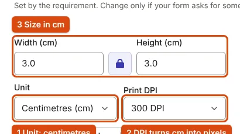

Pixels, cm, DPI and KB: Which Number Is the Form Asking For?
A photo rule can mix pixels, centimetres, DPI and kilobytes. Here is how they relate, using the figures in real SSC, IBPS and PAN notices.
Three different numbers
A photo requirement can contain three kinds of number, and each one is checked differently:
- Pixels (for example 200 × 230 px) are the width and height of the image grid. A portal can read them exactly from the file.
- Centimetres or inches (for example 3.5 × 4.5 cm) describe a printed size. A digital file has no physical size until someone chooses how many pixels go into each inch.
- Kilobytes (for example 20–50 KB) are the storage size of the file. They depend on the pixel count and on how strongly the image is compressed.
DPI (dots per inch) is the link between the first two: it says how many pixels make up one printed inch. Pixels and kilobytes are linked differently, through compression, and no formula converts one into the other.
Converting centimetres to pixels
pixels = centimetres ÷ 2.54 × DPI. For inches, pixels = inches × DPI.
The DPI must come from the form. Official notices that give a physical size usually state one, and the results differ a lot:
| Official requirement | Calculation | Pixels | Source |
|---|---|---|---|
| SSC signature, about 6.0 × 2.0 cm at 300 DPI | 6.0 ÷ 2.54 × 300; 2.0 ÷ 2.54 × 300 | 709 × 236 | SSC GD 2026 notice, Annexure-II, item 21 |
| IBPS thumb impression, 240 × 240 px "in 200 DPI", "i.e. 3 cm * 3 cm" | 240 ÷ 200 × 2.54 | 3.05 cm per side | IBPS CRP PO/MT-XVI, Annexure III |
| IBPS declaration, 800 × 400 px "in 200 DPI", "i.e. 10 cm * 5 cm" | 800 ÷ 200 × 2.54; 400 ÷ 200 × 2.54 | 10.2 × 5.1 cm | Same notification |
| PAN photograph (DSC route), 3.5 × 2.5 cm at 200 DPI | 3.5 ÷ 2.54 × 200; 2.5 ÷ 2.54 × 200 | 276 × 197 | Protean PAN guidelines |
The IBPS rows show the formula working in reverse: IBPS gives the pixels and DPI, and its centimetre figures follow from them. The IBPS photo is different. Its notice gives "200 x 230 pixels (preferred)" and "(4.5cm × 3.5cm)" with no DPI, and the two do not match at any single DPI (200 px over 3.5 cm is 145 DPI; 230 px over 4.5 cm is 130 DPI). When a notice gives both pixels and centimetres like this, the pixel figure is the one a portal can check.

When the form gives only a printed size
Some rules give centimetres and no DPI, because they describe a paper photo. The passport application instructions, for example, ask for a "recent passport size photograph (4.5 cm length x 3.5 cm width) in colour" to be pasted on a form (Passport Seva instruction booklet). For a print, 300 DPI is the usual choice for sharp results, which gives 413 × 531 px; our passport photo print tool lays out copies at that resolution, and taking a passport-size photo at home covers the photo itself.
If an online form gives centimetres without a DPI and without pixels, keep the shape (the ratio of width to height) and choose a moderate pixel size. Shape is what decides whether the face is cropped correctly; the exact pixel count then only affects the file size.
Pixels and kilobytes are separate limits
A form that gives both a pixel size and a KB range sets two limits, and meeting one does not meet the other. The same 350 × 450 px photo can be 9 KB or 90 KB depending on compression and content. We measured our test images with the resizer at quality 0.95, the highest it uses:
| Image | Pixels | Pixel count | JPEG at quality 0.95 |
|---|---|---|---|
| Signature | 140 × 60 | 8,400 | 3.1 KB |
| Signature | 300 × 100 | 30,000 | 8.0 KB |
| Portrait | 200 × 230 | 46,000 | 9.1 KB |
| Portrait | 350 × 450 | 157,500 | 26.5 KB |
| Portrait | 600 × 800 | 480,000 | 94.7 KB |
| Portrait | 1200 × 1600 | 1,920,000 | 443.9 KB |
Two things follow. A large photo does not fit a small limit without losing quality, so set the pixel size first; getting a photo under a KB limit without blur shows how much. And a small, simple image can fall below a minimum: the 140 × 60 px signature is 3.1 KB against IBPS's 10 KB minimum, so the resizer pads it.
Does the DPI tag inside the file matter?
For an online upload, rarely. A JPEG can carry a DPI value in its header, but changing it does not change the pixels or the picture, and the file size stays almost the same. A check on "dimensions" reads the pixel width and height. Where a notice says "scan at 200 DPI", as IBPS does ("Set the scanner resolution to a minimum of 200 dpi"), it is telling you how to capture enough detail, not which tag to write.
Common mistakes
- Dividing by 2.5 or 10. There are 2.54 cm in an inch.
- Swapping width and height. IBPS writes "(4.5cm × 3.5cm)" for a photo that is 200 px wide and 230 px high, so the larger number is the height. Read the pixel figure, which gives the order.
- Stretching to fit. If the crop has a different shape from the target, the face is squashed. Crop to the target shape first; the resizer's frame does this.
- Treating a DPI change as a resize. Changing 72 DPI to 300 DPI in an editor without resampling leaves the same pixels.
- Saving the result as PNG. A PNG of the right pixel size can still be several times over the KB limit; see JPEG, PNG or WebP.
Exam-specific figures, each with its source, are on the SSC, UPSC, IBPS and NEET pages. UPSC, for instance, sets no pixel size for its photo at all, only 20–200 KB (UPSC instructions).
Frequently asked questions
A form asks for 200 × 230 pixels. What is that in centimetres?
It depends on the DPI: about 2.5 × 2.9 cm at 200 DPI, or 1.7 × 1.9 cm at 300 DPI. When a form gives pixels, use the pixels.
Does lowering the DPI make the file smaller?
Not on its own. Only fewer pixels or stronger compression make it smaller.
What is the difference between DPI and PPI?
PPI (pixels per inch) describes image or screen density; DPI (dots per inch) describes a printer. Forms use DPI for both, and so does this page.
Sources
- SSC: Constable (GD) Examination 2026 notice, Annexure-II, item 21 (6.0 × 2.0 cm at 300 DPI)
- IBPS: CRP PO/MT-XVI notification, Annexure III (pixels, DPI and cm for each upload)
- Protean: Guidelines for the DSC-based online PAN application, scan specifications table
- Ministry of External Affairs: Instructions for filling the passport application form, photograph dos and don'ts
- UPSC: Instructions for Uploading the Photo & Signature
Measurements on this page come from running ApplyReady's own tools on the synthetic test images described in the editorial policy. Found a mistake? Report an error.